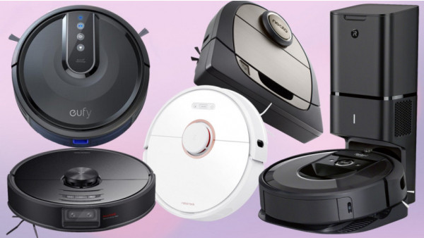

Elementary Education Has Gone Terribly Wrong!
August 2020 by Natalie Walker
At first glance, the classroom I was visiting at a high-poverty school in Washington, D.C., seemed like a model of industriousness. The teacher sat at a desk in the corner, going over student work, while the first graders quietly filled out a worksheet intended to develop their reading skills.As I looked around, I noticed a small girl drawing on a piece of paper. Ten minutes later, she had sketched a string of human figures, and was busy coloring them yellow.

Best Robot Vacuums of 2022.
Apr 11, 2022 by Jackson Cooper
Nothing beats hands-free cleaning,and it truly does not get any better than a robot vacuum. With the push of a button, the best robot vacuums can tackle the largest room in your house without wasting any time. They are equipped with special features like a quick connection to handheld devices or the ability to remember the overall layout of each room in your home. Stop spending hours panic-vacuuming before guests come over or doing chores on your weekends. Enjoy more free time while these devices take care of the dirty work. All you need to operate a robot vacuum is an open outlet for its charging port and you are ready to roll.